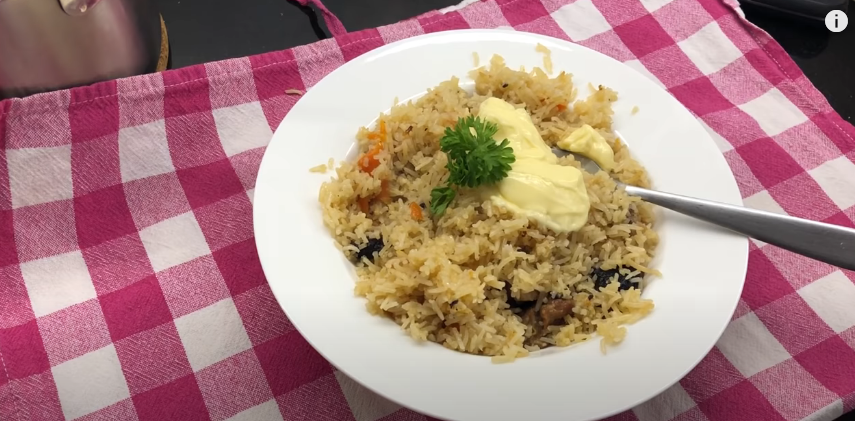

Plov

Description
Ingredients
- 300g meat (whatever you like)
- 300g rice
- 1 large onion
- 1 whole garlic
- 3 carrots
- Sunflower seed oil
- Salt
- Water
- Parsley (for serving)
Steps
- Cut the meat into chunks of your preferred size.
- Add a thin layer of oil to a medium size pot.
- Put the pot on the oven and set it to boil.
- When the oil is hot, add the meat chunks to oil.
- While the pot is boiling, cut up the onion into big pieces.
Add the onion to the pot and mix the contents around gently.
- Cut up the carrots into quarter logs (so they survive cooking).
Add them to the pot and mix.
- Peel the bulb of garlic. You don't need to break it apart.
- Wash the rice, if you'd like.
- Add your preferred amount of salt to the pot.
- Add water to the pot until the ingredients start floating.
- Put the bulb of garlic in the middle of the pot.
- Let it boil for around 10 minutes, until the water level returns
to what it was before.
- Remove the garlic bulb from the pot and set it aside.
- Carefully add rice to the top to create a surface of rice.
No more mixing after this point!
- Set the stove to low heat.
Spread out the rice evenly in the pot.
(Try not to mix the layers of ingredients together.)
- Add water until there is about 2cm of water above rice.
(Try not to mix the layers of ingredients together.)
- Let the pot sit until the water evaporates.
(You can mix the rice while waiting, but don't go too deep.)
- When water is gone, push the garlic bulb deep into the middle of the
rice. Cover it with a bit of rice.
- Poke 3 holes in the rice with a stick.
- Cover pot partially with small gap.
Cover the pot with a towel before using the lid, if you'd like.
- Let sit for 5 min.
- Open the pot and stir the rice around.
(Remember not to mix the top and bottom layers.)
Add water if needed.
- Poke holes in the rice and cover the pot again.
This time let it sit for 20 min.
- You're done! Finally, you can mix everything together.
Serve in a bowl with a leaf of parsley on top.